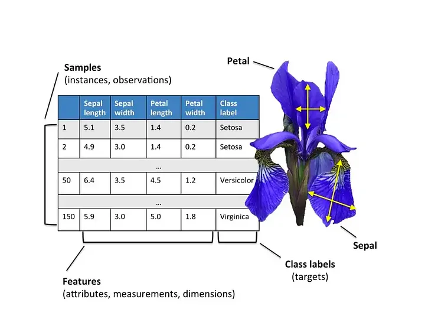

0 0.25
1 0.50
2 0.75
3 1.00
dtype: float64Pandas
References
Installation
You can install Pandas using pip:
Or using conda:
To use Pandas, you need to import the pandas module:
What is Pandas?
Pandas is a Python library that provides data structures and data analysis tools. Pandas is derived from ‘panel’ and ‘data’, panel data is an econometrics term for data sets that include observations over multiple time periods for the same individuals. The origins of Pandas is in the financial industry, where it was developed to provide an efficient way to work with large datasets.
Tabular Data
Pandas is designed to work with tabular data. Tabular data is data that is organized in rows and columns. Each row represents a single observation, and each column represents a single variable.
How is Pandas different from Numpy?
NumPy provides the basic array data type and core array operations. Pandas builds on this foundation by defining fundamental structures for working with data. It offers methods for tasks such as:
- reading data
- handling dates and time series
- sorting, grouping, re-ordering
- general data manipulation, such as dealing with missing values.
Unlike Numpy, Pandas data structures are designed to work with heterogenous data. This means that each column in a Pandas DataFrame can have a different data type.
Like Pandas is built on top of NumPy, other libraries are built on top of Pandas. For example, statsmodels and scikit-learn.
Basic data structures in pandas
Pandas provides three primary data structures:
- Series: A one-dimensional labeled array capable of holding any data type. It’s best thought of as a single column of data.
- DataFrame: A two-dimensional labeled data structure with columns of potentially different types. It’s similar to a table in a database or an Excel spreadsheet.
- Index: An immutable sequence used for indexing and alignment of the data structures, like the row labels in a DataFrame.
Data Structures Visualization
Consider the following sample DataFrame - it contains both rows and columns. A series is a singular column of this DataFrame. Both the DataFrame and each Series contain an Index - a shared list of row labels.

Series
A Series represents a column of a DataFrame. It is a one-dimensional array-like object containing values, with associated data labels called its index. If you don’t specify an index, a default sequence of integers is assigned as the index.
You can create a series with your own index:
Numpy-like Operations
Pandas Series are built on top of NumPy arrays and support many similar operations.
0 0.538393
1 0.126123
2 -1.105116
3 -2.644618
Name: daily returns, dtype: float64More than NumPy Arrays
A pandas Series is a hybrid between a NumPy array and a dictionary: it combines NumPy’s efficient numerical operations with dictionary-style labeled indexing, while adding specialized statistical methods and more flexible indexing options designed specifically for data analysis.
count 4.000000
mean -0.771305
std 1.430783
min -2.644618
25% -1.489992
50% -0.489497
75% 0.229190
max 0.538393
Name: daily returns, dtype: float64AMZN 0.538393
AAPL 0.126123
MSFT -1.105116
GOOG -2.644618
Name: daily returns, dtype: float64Filtering
You can filter a Series using boolean indexing. Boolean indexing (also called boolean masking or boolean filtering) returns values from the Series where the condition is True, while filtering out False values.
AMZN True
AAPL True
MSFT False
GOOG False
Name: daily returns, dtype: boolUse the Boolean index with square brackets [] to filter the Series:
DataFrames
A DataFrame is several columns, one for each variable, it is analogous to a (highly optimized) Excel spreadsheet. You can create a DataFrame by passing a dictionary of lists to the DataFrame constructor.
Creating DataFrames
There are several common ways to create a DataFrame, such as:
- From a dictionary (as shown previously)
- From a list with specified column names
- From multiple Series
- From an external file (e.g., CSV, Excel)”
| Number | Description | |
|---|---|---|
| 0 | 1 | one |
| 1 | 2 | two |
Index Alignment
Pandas aligns rows by matching index labels across Series to create a unified DataFrame.
Reading a CSV File
You can read data from a CSV file using the read_csv function. The read_csv function returns a DataFrame. The read_csv function supports file paths, URLs, and file-like objects.
Slicing
We can select particular rows using standard Python array slicing notation. We can also select columns by passing a list of column names to the DataFrame.
| city | country | date.utc | location | parameter | value | unit | |
|---|---|---|---|---|---|---|---|
| 2 | Antwerpen | BE | 2019-06-17 07:00:00+00:00 | BETR801 | pm25 | 18.5 | µg/m³ |
| 3 | Antwerpen | BE | 2019-06-17 06:00:00+00:00 | BETR801 | pm25 | 16.0 | µg/m³ |
| 4 | Antwerpen | BE | 2019-06-17 05:00:00+00:00 | BETR801 | pm25 | 7.5 | µg/m³ |
Slicing: loc and iloc
You can select data using the loc and iloc methods. The loc method selects data by label, while the iloc method selects data by integer location. You can use these methods to select rows and columns simultaneously.
| city | country | date.utc | |
|---|---|---|---|
| 2 | Antwerpen | BE | 2019-06-17 07:00:00+00:00 |
| 3 | Antwerpen | BE | 2019-06-17 06:00:00+00:00 |
| 4 | Antwerpen | BE | 2019-06-17 05:00:00+00:00 |
Filtering
Like a Series, you can filter a DataFrame using boolean indexing. Boolean indexing (also called boolean masking or boolean filtering) returns values from the DataFrame where the condition is True, while filtering out False values.
| city | country | date.utc | location | parameter | value | unit | |
|---|---|---|---|---|---|---|---|
| 1825 | Paris | FR | 2019-06-21 00:00:00+00:00 | FR04014 | no2 | 20.0 | µg/m³ |
| 1826 | Paris | FR | 2019-06-20 23:00:00+00:00 | FR04014 | no2 | 21.8 | µg/m³ |
| 1827 | Paris | FR | 2019-06-20 22:00:00+00:00 | FR04014 | no2 | 26.5 | µg/m³ |
| city | country | date.utc | location | parameter | value | unit | |
|---|---|---|---|---|---|---|---|
| 2441 | Paris | FR | 2019-05-23 08:00:00+00:00 | FR04014 | no2 | 97.0 | µg/m³ |
| 2442 | Paris | FR | 2019-05-23 07:00:00+00:00 | FR04014 | no2 | 91.8 | µg/m³ |
| 3188 | Paris | FR | 2019-04-22 01:00:00+00:00 | FR04014 | no2 | 99.0 | µg/m³ |
Filtering: where method
The where method is used to filter a DataFrame. The where method returns a DataFrame with the same shape as the original DataFrame, but with NaN values where the condition is False. This is useful when you want to keep the shape of the DataFrame the same.
Common Attributes and Methods
Pandas provides many methods for working with DataFrames. Here are some common methods:
- head(): Returns the first n rows of the DataFrame.
- tail(): Returns the last n rows of the DataFrame.
- info(): Prints a concise summary of a DataFrame.
- describe(): Generates descriptive statistics.
- shape: Returns a tuple representing the dimensionality of the DataFrame.
- columns: Returns the column labels of the DataFrame.
- dtypes: Returns the data types of each column.
- values: Returns the data as a NumPy array.
head
The head method allow you to view the first few rows of a DataFrame. By default, head returns the first 5 rows.
| city | country | date.utc | location | parameter | value | unit | |
|---|---|---|---|---|---|---|---|
| 0 | Antwerpen | BE | 2019-06-18 06:00:00+00:00 | BETR801 | pm25 | 18.0 | µg/m³ |
| 1 | Antwerpen | BE | 2019-06-17 08:00:00+00:00 | BETR801 | pm25 | 6.5 | µg/m³ |
| 2 | Antwerpen | BE | 2019-06-17 07:00:00+00:00 | BETR801 | pm25 | 18.5 | µg/m³ |
| 3 | Antwerpen | BE | 2019-06-17 06:00:00+00:00 | BETR801 | pm25 | 16.0 | µg/m³ |
| 4 | Antwerpen | BE | 2019-06-17 05:00:00+00:00 | BETR801 | pm25 | 7.5 | µg/m³ |
tail
The tail method allows you to view last few rows of a DataFrame. By default, tail returns the last 5 rows.
| city | country | date.utc | location | parameter | value | unit | |
|---|---|---|---|---|---|---|---|
| 5267 | London | GB | 2019-04-09 06:00:00+00:00 | London Westminster | no2 | 41.0 | µg/m³ |
| 5268 | London | GB | 2019-04-09 05:00:00+00:00 | London Westminster | no2 | 41.0 | µg/m³ |
| 5269 | London | GB | 2019-04-09 04:00:00+00:00 | London Westminster | no2 | 41.0 | µg/m³ |
| 5270 | London | GB | 2019-04-09 03:00:00+00:00 | London Westminster | no2 | 67.0 | µg/m³ |
| 5271 | London | GB | 2019-04-09 02:00:00+00:00 | London Westminster | no2 | 67.0 | µg/m³ |
info
The info method provides a concise summary of the DataFrame, including the number of non-null values in each column, the data type of each column, and the memory usage of the DataFrame.
<class 'pandas.core.frame.DataFrame'>
RangeIndex: 5272 entries, 0 to 5271
Data columns (total 7 columns):
# Column Non-Null Count Dtype
--- ------ -------------- -----
0 city 5272 non-null object
1 country 5272 non-null object
2 date.utc 5272 non-null object
3 location 5272 non-null object
4 parameter 5272 non-null object
5 value 5272 non-null float64
6 unit 5272 non-null object
dtypes: float64(1), object(6)
memory usage: 288.4+ KBdescribe
The describe method generates descriptive statistics for each column in the DataFrame.
shape and columns
The shape attribute returns a tuple representing the dimensionality of the DataFrame.
The columns attribute returns the column labels of the DataFrame.
dtypes and values
The dtypes attribute returns the data types of each column in the DataFrame.
city object
country object
date.utc object
location object
parameter object
value float64
unit object
dtype: objectThe values attribute returns the data as a NumPy array.
array([['Antwerpen', 'BE', '2019-06-18 06:00:00+00:00', ..., 'pm25',
18.0, 'µg/m³'],
['Antwerpen', 'BE', '2019-06-17 08:00:00+00:00', ..., 'pm25', 6.5,
'µg/m³'],
['Antwerpen', 'BE', '2019-06-17 07:00:00+00:00', ..., 'pm25',
18.5, 'µg/m³'],
...,
['London', 'GB', '2019-04-09 04:00:00+00:00', ..., 'no2', 41.0,
'µg/m³'],
['London', 'GB', '2019-04-09 03:00:00+00:00', ..., 'no2', 67.0,
'µg/m³'],
['London', 'GB', '2019-04-09 02:00:00+00:00', ..., 'no2', 67.0,
'µg/m³']], dtype=object)